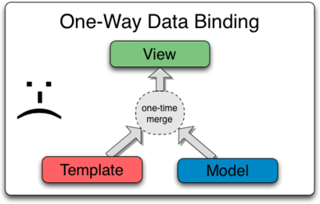

Conceptual Overview
This section briefly touches on all of the important parts of AngularJS using a simple example. For a more in-depth explanation, see the tutorial.
| Concept | Description |
|---|---|
| Template | HTML with additional markup |
| Directives | extend HTML with custom attributes and elements |
| Model | the data shown to the user in the view and with which the user interacts |
| Scope | context where the model is stored so that controllers, directives and expressions can access it |
| Expressions | access variables and functions from the scope |
| Compiler | parses the template and instantiates directives and expressions |
| Filter | formats the value of an expression for display to the user |
| View | what the user sees (the DOM) |
| Data Binding | sync data between the model and the view |
| Controller | the business logic behind views |
| Dependency Injection | Creates and wires objects and functions |
| Injector | dependency injection container |
| Module | a container for the different parts of an app including controllers, services, filters, directives which configures the Injector |
| Service | reusable business logic independent of views |
Data Binding
Data-binding in AngularJS apps is the automatic synchronization of data between the model and view components. The way that AngularJS implements data-binding lets you treat the model as the single-source-of-truth in your application. The view is a projection of the model at all times. When the model changes, the view reflects the change, and vice versa.
Data Binding in Classical Template Systems

Most templating systems bind data in only one direction: they merge template and model components
together into a view. After the merge occurs, changes to the model
or related sections of the view are NOT automatically reflected in the view. Worse, any changes
that the user makes to the view are not reflected in the model. This means that the developer has
to write code that constantly syncs the view with the model and the model with the view.
Data Binding in AngularJS Templates

AngularJS templates work differently. First the template (which is the uncompiled HTML along with
any additional markup or directives) is compiled on the browser. The compilation step produces a
live view. Any changes to the view are immediately reflected in the model, and any changes in
the model are propagated to the view. The model is the single-source-of-truth for the application
state, greatly simplifying the programming model for the developer. You can think of
the view as simply an instant projection of your model.
Because the view is just a projection of the model, the controller is completely separated from the view and unaware of it. This makes testing a snap because it is easy to test your controller in isolation without the view and the related DOM/browser dependency.